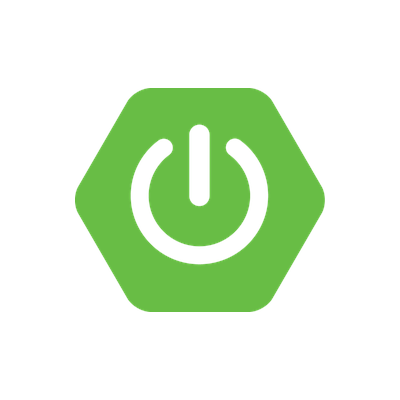

Blog yazmaya ilk başladığım zamanlarda bu şekilde bir blog sitesinin Spring Boot MVC ile nasıl yapılabileceğini anlatan bir yazı yazmıştım. O yazıya buradan ulaşabilirsiniz fakat o zamanın teknolojileri ve benim blog yazım biraz eskide kaldı. Bu yüzden bu yazıda Spring Boot MVC ve Thymeleaf ile bu blog sitesi gibi bir sitenin iskeletini oluşturacağım. Yeni ve yeniden :D
Yazının içeriği eski yazıdakinin neredeyse birebir aynısı olacak fakat üzerine biraz eklemeler de yapacağım. Bu yazıda anlattığım sırayı izleyerek kendi blog siteniz için başlangıç adımlarını atmış olursunuz. Sonrasında çeşitli sayfalar, CSS 'ler veya özellikler ekleyerek geliştirmeye devam edebilirsiniz. Adım adım ilerleyelim.
#1. Proje çatısı (Spring Boot)
Günümüzde çok yaygın kullanılan Spring Framework yazılım geliştirme metodolojisini kolaylaştırmakta ve Spring Boot altyapısı ile hızlandırmaktayız. İlk aşamada bize lazım olan bir Spring Boot projesidir. Bunun için Spring Initializr adresine gidip aşağıdaki resimdeki gibi bir template oluşturabilirsiniz.
Bu ekranda sol taraftakiler tamamlayıcı teknolojilerden birisi olan Maven için gerekli. Bu bilgiler sayesinde Maven projenize bir hiyerarşik yapı verecek ve paketleyecek. Proje çıktısı .jar olabilir çünkü Spring Boot aslında içinde bir main class olan bağımsız bir uygulamadır.
#2. Bağımlılıklar (Dependency 'ler)
Projemizde kullanacağımız temel bağımlılıklar ve üstlendikleri kritik görevler:
- Spring Boot DevTools: İlk sıradaki dependency devtools sayesinde projeniz güncellendiğinde hemen derlenir ve kendi içindeki sunucuya otomatik deploy edilir. Zaten Spring Boot ile ekstra bir Tomcat gibi bir sunucu ihtiyacımız yoktur. Run as Spring Boot App ile projeniz ayağa kalkar ve
localhost:8080'de çalışmaya ve otomatik güncellemelere başlar. - Spring Web: Az önce söylediğim web uygulaması olarak çalışmasını sağlıyor. İçerisinde Tomcat otomatik olarak geliyor ve DevTools ile buraya deploy ediliyor. Run on Server yerine Run as Spring Boot App ile ayağa kalkıyor. Dilerseniz
mainmetodunuzu da ayağa kaldırabilirsiniz. Spring Boot bu şekilde sizi tembelleştirerek işleri halleder :) - Thymeleaf: MVC dizaynı ile kullanabileceğiniz modern ve temiz bir HTML şablon motoru yani tag library 'dir. Önyüze aktarılan bilgileri çeşitli yapılarda HTML verisine dönüştürüyorsunuz, mesela
th:eachgibi bir komut ile bir elemanı for döngüsü gibi çoğaltabiliyorsunuz. Spring Framework ile iç içe çok verimli çalışabiliyorlar. Detaylar burada. - Spring Security: Erişim kontrolü, şifre koruması veya cross-site scripting (CSRF/XSS) koruması gibi işlevleri sağlar. Spring Security 'yi sitenizin admin sayfası için kullanırsınız muhtemelen diye düşünerek ekledim ve basitçe configure ettim.
- Spring Data JPA (Hibernate): Veritabanı işlemlerinizi native SQL ifadeleri yazmadan gerçekleştirebilmenizi sağlıyor. Aynı zamanda veri modellerinizi (entity) kodunuz içerisinde yazdığınız sınıflarla tanımlamanızı ve güncellemenizi de sağlayarak geliştirme sürecini anlaşılır ve hızlı hale getirebiliyor.
- PostgreSQL Driver: PostgreSQL yerine farklı veritabanları (MySQL, Oracle, MSSQL gibi) kullanılabilir. Bu dependency örnek olması açısından burada. Siz bir veritabanına bağlanmak için bu teknolojilerden herhangi birini seçebilirsiniz. Bu dependency ile Spring Data JPA hangi veritabanına bağlanacağını biliyor.
#3. Backend tamam, arayüz nerede?
Arayüz için Thymeleaf kütüphanesinin özelliklerinden yararlanacağız fakat profesyonel CSS/JavaScript arayüzleri yazamıyorsanız veya Angular / React gibi kütüphaneler konusunda bilginiz yoksa internette hazır çok sayıda HTML/CSS template bulunuyor. Tabi bir link ile tasarımı yapan siteye atıfta bulunarak kullanmak kaydı ile.
Ben ColorLib ile template bulup üzerine kod ile geliştirme yapmayı tercih ettim. Bu sitede çoğunlukla WordPress temaları olsa da HTML + Bootstrap (yani CSS) ile hazırlanmış şablonları da var. Bu örnekte arayüzlere özen göstermedim ve berbat görünüyorlar fakat zaten o kısmı siz hallediyor olacaksınız.
#4. Proje geliştirmeye hazır
Önyüz için bir tema bulup veya hazırlayıp projeye dahil ettikten sonra (templates altındaki index.html sayfası mesela) projenin Eclipse veya IntelliJ IDEA 'da standart Maven yapısında görünmesi lazım. Eclipse 'de Import Existing Maven Project işlemi ile projeyi içeri aktarabilirsiniz. Eclipse için marketten Spring Tools Suite (STS 4) eklentisini de kurmayı unutmamalısınız.
src/main/resources altındaki static klasörü içinde resim, CSS, JavaScript dosyaları yer almalıdır. Thymeleaf ve Spring Boot ikilisi bu klasör yapısı ile çalışır. templates klasörü ise web sayfalarınız olacaktır; index.html ve entry.html burada yer alır. application.properties uygulamanın kullanacağı esas bilgileri (veritabanı bağlantıları, loglama seviyesi, mail sunucusu vb.) içerecektir. En alttaki pom.xml ise bağımlılıkları ve derleme işlemini yöneten Maven yapılandırmasıdır.
Bu proje şu anda Run as Spring Boot Application şeklinde çalıştırılmaya hazırdır teknik olarak fakat Spring Boot ayağa kalkarken PostgreSQL driver yüzünden veritabanı bağlantı bilgileri isteyecektir. Ayrıca Spring Security ve resim cache 'lemek için de bonus özellikler ekledim.
application.properties Yapılandırması:
server.shutdown=graceful
spring.datasource.username = postgres
spring.datasource.url = jdbc:postgresql://localhost:5432/blog
spring.datasource.password = somepassword
spring.jpa.hibernate.ddl-auto = update
spring.jpa.properties.hibernate.enable_lazy_load_no_trans = true
spring.jpa.properties.hibernate.current_session_context_class = org.springframework.orm.hibernate5.SpringSessionContext
spring.security.user.name = myadmin
spring.security.user.password = myadminpassword
spring.web.resources.cache.cachecontrol.max-age = 30d
spring.web.resources.cache.cachecontrol.no-cache = false
spring.web.resources.cache.cachecontrol.no-store = false
Bu şekilde kullandığınız veritabanı bilgilerini yazdıktan sonra http://localhost:8080/index.html adresine gittiğinizde karşınıza kapı gibi Spring Security çıkar ve kullanıcı adı şifre ister. Properties 'deki gibi spring.security.user.name ve password ile geçebilirsiniz. Bu aşamada 404 gibi bir hata alabilirsiniz ama sorun değil.
Security 'yi sadece admin sayfası gibi alanlarda kullanırsınız muhtemelen. Bu şekilde bir ayarı yapabilmek veya bütün sayfalara izin verebilmek için aşağıdaki gibi bir sınıfı projeye dahil etmelisiniz. /admin sayfası kullanıcı adı şifre isteyecek ve geri kalan sayfalar direkt olarak açılacaktır:
Spring Security Yapılandırması (SeConfig.java):
@Configuration
public class SeConfig {
@Bean
SecurityFilterChain securityFilterChain(HttpSecurity http) throws Exception {
http.authorizeHttpRequests(custom -> custom.requestMatchers("/admin").authenticated());
http.authorizeHttpRequests(custom -> custom.requestMatchers(PathRequest.toStaticResources().atCommonLocations()).permitAll());
http.authorizeHttpRequests(custom -> custom.anyRequest().permitAll());
return http.build();
}
}
@Configuration sayesinde Spring Framework bu sınıfı konfigürasyon sınıfı olarak görür ve örneğin Spring Security 'yi ayağa kaldırırken bu anotasyon ile işaretlenmiş sınıflar arar. SecurityFilterChain bean 'i güvenlik katmanlarında kullanılır.
Bu şekilde security ayarını temel seviyede yapmış oluyoruz ve anasayfamızı yani index sayfasını hazırlamaya geçiyoruz. Veritabanında tutacağınız Hibernate entity 'lerini yani nesnelerini (tabloları) tanımlamak gerekiyor öncelikle. Çünkü açılan sayfada bir sorgu yapıp ekrana liste getireceğiz. Bunun için bir örnek aşağıdaki gibi olabilir:
Entry Entity Sınıfı (Entry.java):
@Entity
@Table(name = "ENTRY")
public class Entry {
@Id
@GeneratedValue(strategy = GenerationType.IDENTITY)
@Column(name = "ID", nullable = false)
private int id;
@Column(name = "TITLE", nullable = false, length = 1500)
private String title;
@Column(name = "IMG_URL", nullable = false, length = 200)
private String imgurl;
@Column(name = "SUMMARY", nullable = false, length = 2000)
private String summary;
@ManyToOne
@JoinColumn(name = "CAT", referencedColumnName = "ID", nullable = false)
private Category category;
@ManyToMany
@JoinTable(
name = "EntryTags",
joinColumns = @JoinColumn(name = "entryId"),
inverseJoinColumns = @JoinColumn(name = "tagId")
)
private List tags;
@Column(name = "PUB_DATE", nullable = false)
private Date publishDate = new Date();
// Getters, Setters & Constructors...
}
@Entity bir veritabanı tablosu olduğunu belirtiyor. @Table ile veritabanındaki tablo ismini best practice olması adına belirtiyoruz. Buradaki join 'lerle ilgili söylenebilecek çok şey var; ben örnek olarak n-1 Category ve n-n Tag sınıflarını da yazdım. Siz kendi sitenizde kendi veritabanı yapınızı geliştireceğiniz için detaylandırmanın mantığı olmayacak. Ama buna benzer ilişkiler mutlaka kuracaksınız, örneğin yazı kategorisi ve etiketleri mutlaka olacaktır.
Category ve Tag Varlıkları:
@Entity
@Table(name = "Category")
public class Category {
@Id
@Column(name = "ID", nullable = false)
@GeneratedValue(strategy = GenerationType.IDENTITY)
private int id;
@Column(name = "NAME", nullable = false, length = 100)
private String name;
// Getters, Setters & Constructors...
}
@Entity
@Table(name = "TAG")
public class Tag {
@Id
@GeneratedValue(strategy = GenerationType.IDENTITY)
@Column(name = "ID", nullable = false)
private int id;
@Column(name = "NAME", nullable = false, length = 100)
private String name;
@ManyToMany(mappedBy = "tags")
@OrderBy(value = "id desc")
private List entries;
// Getters, Setters & Constructors...
} Bu nesneleri yöneten veritabanı erişim sınıfı yazacaksınız tabi CRUD işlemleri için. İlk yazınızı yani post 'unuzu veritabanına manuel olarak ekleyebilirsiniz. Öncelikle uygulamayı bir kere ayağa kaldırıp tabloların otomatik oluşmasını sağlayınız. Önce "blog" isimli PostgreSQL veritabanını oluşturmanız gerekecektir.
Veritabanını oluşturduktan sonra bu verilere erişecek olan basit bir EntryRepository işimizi görecektir:
Spring Data JPA Repository (EntryRepository.java):
@Repository
public interface EntryRepository extends JpaRepository, JpaSpecificationExecutor {
// Spring Data JPA gerisini otomatik üretir, bu kadar :)
}
@Repository de @Component ya da @Service gibi bir Spring anotasyonudur. Veritabanına erişim yapan sınıflar için best practice olarak kullanılmaktadır. JpaRepository ile Entry sınıfı üzerinde en sık kullanılan CRUD ve sayfalama işlemlerini hazır yapabiliyoruz.
Sonrasında /index.html ile browser 'a gitmeye çalıştığınızda index sayfasını bulamadım hatası alacaksınız. Burada bir yönlendirme yapılması gerekiyor ve bunun için Spring Framework 'ün Controller yapısını kullanacaksınız. ModelAndView nesnesi ile index view 'unu döndürüyor ve içerisine entry listesini ekliyoruz:
Spring MVC Controller (Maincontroller.java):
@Controller
public class Maincontroller implements ErrorController {
private EntryRepository entryRepository;
private List all_entries;
public Maincontroller(EntryRepository entryRepository) {
this.entryRepository = entryRepository;
this.all_entries = this.entryRepository.findAll(
org.springframework.data.domain.Sort.by(
org.springframework.data.domain.Sort.Order.desc("id")
)
);
}
@GetMapping(path = { "", "/", "index" })
public ModelAndView home() {
ModelAndView modelAndView = new ModelAndView("index");
modelAndView.addObject("entries", all_entries);
return modelAndView;
}
@GetMapping(path = "entry")
public ModelAndView entry(@RequestParam(name = "ent", required = true) Integer entry_id) {
Entry entry = entryRepository.findById(entry_id).get();
ModelAndView modelAndView = new ModelAndView("entry");
modelAndView.addObject("entry", entry);
modelAndView.addObject("content", "entries/" + entry_id + " :: " + entry_id + "");
return modelAndView;
}
}
@Controller sayesinde Spring Boot ayağa kalkarken bu sınıfı tanır ve gelen web isteklerini bu sınıfa yönlendirir. Constructor injection ile EntryRepository bağımlılığımız otomatik enjekte edilir. @GetMapping ise bu controller 'ın home metodunun / veya /index şeklinde gelen HTTP GET isteklerine cevap vereceğini belirtir.
Thymeleaf ile Blog Akışı (index.html):
Post 'ları veritabanından çektikten sonra Thymeleaf th:each yardımı ile ekranda listelemek için aşağıdaki gibi bir index şablonu kullanabilirsiniz:
<!DOCTYPE html>
<html lang="en" xmlns:th="http://www.thymeleaf.org">
<head>
<title th:text="#{site.title}"></title>
<meta charset="utf-8">
<meta name="viewport" content="width=device-width, initial-scale=1, shrink-to-fit=no">
<meta name="description" th:content="#{site.description}">
<link rel="stylesheet" href="css/bootstrap.min.css">
</head>
<body>
<div th:each="entry: ${entries}">
<a th:href="@{'entry?ent=' + ${entry.id}}">
<img th:src="@{'images/' + ${entry.id} + '/' + ${entry.imgurl}}" width="64" height="64">
</a>
<div>
<h3>
<a th:href="@{'entry?ent=' + ${entry.id}}" th:text="${entry.title}"></a>
</h3>
<div>
<p>
<span th:each="tag: ${entry.tags}">
<a th:href="@{'tag?tag=' + ${tag.id}}">
<span th:text="${tag.name}"></span>
</a>
</span>
</p>
<p>
<span th:text="${#dates.format(entry.publishDate, 'dd MMMM yyyy')}"></span>
</p>
</div>
<p th:text="${entry.summary}" />
<p>
<a th:href="@{'entry?ent=' + ${entry.id}}" th:text="#{site.read_more}"></a>
</p>
</div>
</div>
<script src="js/bootstrap.min.js"></script>
</body>
</html>Yazı Detay Şablonu (entry.html):
Yazı içeriğini templates klasörü altındaki entries klasöründen Thymeleaf replace metodu ile alabilirsiniz. Bu sayede dinamik olarak sayfada istediğiniz yazıyı yükleyebilirsiniz:
<!DOCTYPE html>
<html lang="en" xmlns:th="http://www.thymeleaf.org">
<head>
<title th:text="${entry.title}"></title>
<meta charset="utf-8">
<meta name="viewport" content="width=device-width, initial-scale=1, shrink-to-fit=no">
<meta name="description" th:content="${entry.summary}">
<meta property="og:title" th:content="${entry.title}" />
<meta property="og:image" itemprop="image" th:content="@{'images/' + ${entry.imgurl}}" />
<link rel="stylesheet" href="css/bootstrap.min.css">
</head>
<body>
<div th:replace="~{entries/1 :: 1}"></div>
<!-- <div th:replace="${content}"></div> -->
<div>
<div>
<span th:text="${#dates.format(entry.publishDate, 'dd MMMM yyyy')}"></span>
</div>
<div>
<a th:href="@{'tag?tag=' + ${tag.id}}" th:each="tag: ${entry.tags}" th:text="${tag.name}"></a>
</div>
</div>
<script src="js/bootstrap.min.js"></script>
</body>
</html>#5. Balık tutabiliyorsunuz artık
Blog yazılarınızı listeleyeceğiniz ve görüntüleyebileceğiniz ilk ekranlarınız bu kodlar ile hazır hale gelebiliyor. Bütün yazıyı okuduysanız size sürpriz olarak yazdığım kodların linkini de buraya (blog.zip) bırakayım, indirip inceleyebilirsiniz.
Bu noktadan sonra kendi isterlerinize göre kendi konfigürasyonunuzu yapmalısınız. Yukarıdaki kod örneklerini 1 gün içerisinde hayata geçirmeniz mümkün. Eğer yapacağınız yazılımı analiz etmişseniz bundan sonraki kısım tamamen bu yazılımı buna benzer kodlar ile geliştirmeye, Spring, Hibernate ve Thymeleaf 'in güçlü özelliklerini kullanmaya kalıyor.
"Controller sınıfınız zamanla büyüyecektir. Veritabanında tuttuğunuz bilgiler ve repository sınıflarınız zenginleşecektir. Bu yazının amacı temel çerçeveyi sağlam oturtmaktı. Sizlere hatasız kodlamalar diliyorum ve bir sonraki yazıda görüşmek üzere :)"